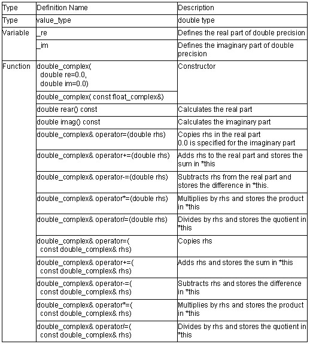

double_complex Class

1. double_complex( double re=0.0, double im=0.0)
Constructor of class double_complex.
The initial settings are as follows:
_re = re;
_im = im;
2. double_complex( const float_complex&)
Constructor of class double_complex.
The initial settings are as follows:
_re = (float)rhs.real();
_im = (float)rhs.imag();
3. double double_complex::real() const
Calculates the real part.
Return value: this->_re
4. double double_complex::imag() const
Calculates the imaginary part.
Return value: this->_im
5. double_complex& double_complex::operator=(double rhs)
Copies rhs in the real part (_re).
0.0 is specified for the imaginary part (_im).
Return value: *this
6. double_complex& double_complex::operator+=(double rhs)
Adds rhs to the real part (_re) and stores the sum in the real part (_re).
The value of the imaginary part (_im) does not change.
Return value: *this
7. double_complex& double_complex::operator-=(double rhs)
Subtracts rhs from the real part and stores the difference in the real part (_re).
The value of the imaginary part (_im) does not change.
Return value: *this
8. double_complex& double_complex::operator*=(double rhs)
Multiplies by rhs and stores the product in *this.
(_re=_re*rhs.real(), _im=_im*rhs.real())
Return value: *this
9. double_complex& double_complex::operator/=(double rhs)
Divides by rhs and stores the quotient in *this.
(_re=_re/rhs.real(), _im=_im/rhs.real()))
Return value: *this
10. double_complex& double_complex::operator=( const double_complex& rhs)
Copies rhs.
Return value: *this
11. double_complex& double_complex::operator+=( const double_complex& rhs)
Adds rhs and stores the sum in *this.
Return value: *this
12. double_complex& double_complex::operator-=( const double_complex& rhs)
Subtracts rhs and stores the difference in *this.
Return value: *this
13. double_complex& double_complex::operator*=( const double_complex& rhs)
Multiplies by rhs and stores the product in *this.
Return value: *this
14. double_complex& double_complex::operator/=( const double_complex& rhs)
Divides by rhs and stores the quotient in *this.
Return value: *this